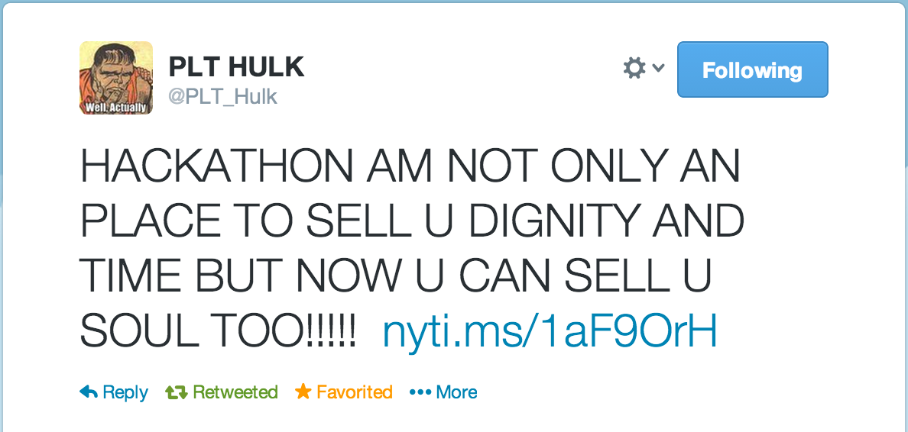

在旧金山地区经常有一些叫做“Hackathon”的活动，吸引挺多人参加。我一直听说这个名字，可是一直不知道它到底是什么。我从来对竞赛式的活动不感兴趣，我觉得那是在降低我的身份：你给了一群笨蛋权力来给自己打分排名 :p 我从来没参加过 ACM，IOI，TopCoder 之类的竞赛。可是在旧金山工作的时候，一天看到有个大公司主办了一个叫做“data science”什么的活动，以为是个讲座或者交流会，又因为我将要做 data science 相关的工作，就想去了解一下。可是没想到，那成为了我人生的第一次 Hackathon 经历。
一进门就感觉这跟一般的 meetup 气氛很不一样。这大周末晚上的，清一色的爷们，没有一个女人，也没有笑声。而且里面的人说话都很奇怪，不正眼看人，有些好像怒目相向的样子，说出话来就像在查你户口。有几次有人问我是干什么的，我刚一开口，他们一句话不回，扭头就跟其他人说话去了。只有一个头发花白的大叔工程师对我挺友好的，于是我们就聊起来。旁边有个华人工程师盯着一个15寸的 Macbook，后来也聊起来，开门见山就问我用什么语言。我也忘了我说什么了，只记得他很自豪的说自己用 JavaScript，而且那是最高配置的 Macbook，是 Retina 显示器的。
等坐到一个像教室一样的房间里面，我才发现这是一个 Hackathon 而不是一个讲座。是一个叫 Kaggle 的公司，联合了像 Neo Technology（产品是 Neo4j）之类的公司组织的。后来我发现，这个 Kaggle 是专门搞 data scientist 的“竞赛”的。我以前从来没听说过这公司，也不知道 data science 还有竞赛。
我有点失望，但还是有点好奇，所以暂时没有离开。等大家都进了房间，台上一个人开始讲话。一开口我就汗颜了：“你们都知道今天来这里是干什么的吗？！……” 难道我是唯一不知道自己来这里干什么的人？我贼眉鼠眼地四下瞄了一圈。我是第一次听到这样的开场白，比监考老师还要厉害一些。然后他就开始讲 Kaggle 的事情，貌似每个人都知道那是什么一样。言语之中不时地冒出像“世界第三的 data scientist”之类的词汇。哇，我第一次听说，原来科学家还有排名之说！
我开始后悔自己只瞄了一眼网站上的广告就来了，都没仔细看他们要干什么。从主持人的言语里我才了解到，这些人来到这里是为了一个竞赛。他们需要组队，在那个房间里待一天一夜，连续奋战之后提交他们的答案，为的是 500 美元的奖金和可以放在简历上的“荣誉”。从周五晚上通宵达旦到周六晚上，太不可思议了。题目我记不清楚了，貌似就是一个 CSV 文件里存着一些社交网络的数据，想要预测什么东西。
最后主持人说：“吃的，喝的，都在外面，保证你们有足够的卡路里。大家开始寻找合作伙伴吧！”然后旁边那位之前聊天的大叔就朝我微笑，貌似想找我做队友。我才窘迫的告诉他，我其实不知道这是一个 Hackathon，我以为这有一个 talk 就来了…… 然后就发现他脸色大变，仿佛之前浪费了宝贵的时间跟我废话似的，立即找其他人搭话去了。伤心难过落荒而逃之前，我还是客气的对他道了声晚安，结果得到一个很没好气的“Good night！”
这件事已经过去好几个月了，最近发现 twitter 上有人这样说：

确实挺符合我的经历的。希望这就是我的最后一次 Hackathon 经历吧。下次不要再误入类似活动的场所了 :)